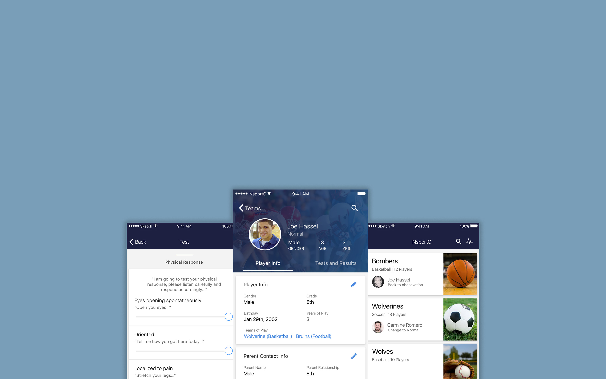
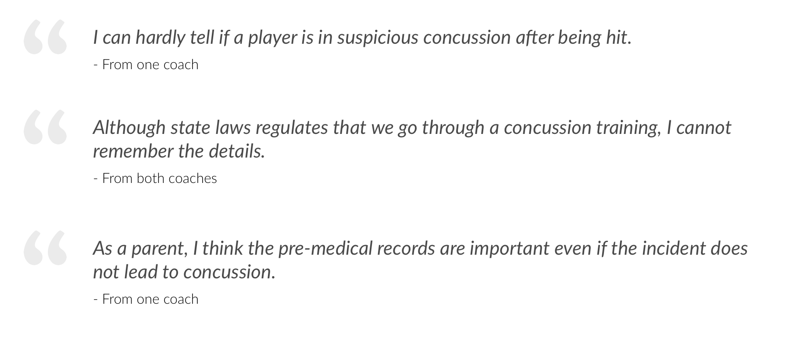
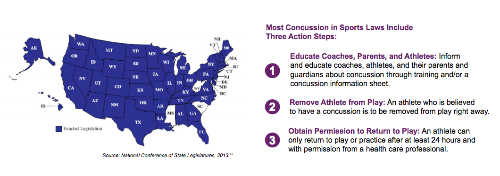
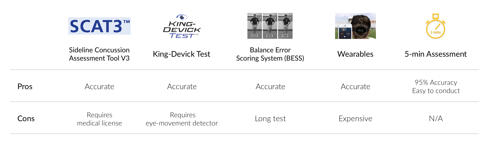
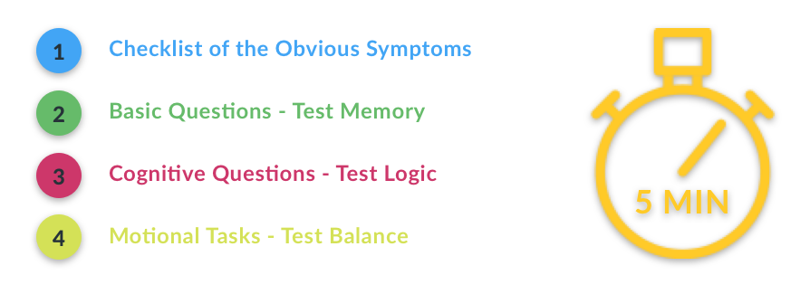

Helping High-school Coaches Handle Sports Concussions
Project Type: Product design
Roles: UX designer & researcher
Team: F. Ren, L. Jiang, C. Luk, S. Wang, B. Xu
Timeline: Fall 2016
There is over 380,000 sports-related concussions in the US. Unlike professional sports teams, middle school or high school teams don’t often have medical professional on the team, so coaches are the front line to make the right judgement if an incident happens. Also, even if the incident doesn’t lead to a concussion, all pre-medical information should be recorded because they are very important to doctors.
64% -76.8% football players have ever suffered from sports concussion (Image Source)
As a group of 6 designers, we started our 3-month research-based design process to build a product to help high-school team coaches make right decisions and keep all pre-medical data when a player gets hit. I worked as the lead designer for web interface. I also participated in the design of mobile app, the user research, and usability tests.

In order to know more about our users, sports concussion scenarios, and if there is any related regulations, we kicked off our research and discovered valuable insights.
The first step is to user interviews. We talked with two coaches who have been high school coaches for over 10 years. Interestingly, they both also have children who played in high school teams, so they also shared their experience as parents. Here are the major findings:
Then We built two primary personas for coaches and one secondary persona for parents.
- Insights
Since concussion is crucial to brain health, which is a serious issue, we started to look into some federal regulations that might influence our product. In our research, we find three major legal regulations:
- Insights
Now that we know coaches need assistance in assessing if a play is in concussion or not, we looked into various assessment tools and their pros & cons:
- Insights
After comparing the different tools and talking with coaches, we decided to adopt the 5-min assessment tool and build it into our product.
After the research, we found that most coaches have a smartphone and carry it with them on court. They also often have computers in their office. Therefore, We decided to put the more sophisticated team management tools on the web platform, while the mobile app covers the assessment tool.
Team Management
Player Records
Concussion Assessment
The web app is mainly designed with emphasis on information management. Coaches will be able to view all players' status and previous assessment test results. In addition, coaches can print out reports based on his players' status.

The mobile has an emphasis on the assessment tool exclusively. To simplify the process and save time, the coach will be able to quickly access the assessment tool on the main page and then select the player associated with the test.

After finishing the prototype, we did two usability tests with coaches and iterated our design based on the user feedback.
In our first version, we use the alphabetical order for the player list. But we later changed it to order by status to better group the information.
Also from coach feedback, teenage player may look similar on small profile pictures. So in order identify players, we added names identify each player.
Coaches can access player information and their previous records via the mobile app.

Coaches can also use the 5-min concussion assessment to check if a player is suspicious of concussion and needs to be removed from play.
{kind=link}
{kind=link}
{kind=link}
{kind=link}
{kind=link}
{kind=link}
{kind=link}